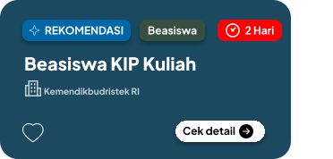

MODE WARNA
PRATINJAU MODE GELAP

Begini tampilan komponen saat mode gelap aktif.
Mode gelap lebih nyaman di malam hari dan menghemat baterai pada layar OLED.
Pilih mode warna aplikasi

Begini tampilan komponen saat mode gelap aktif.
Mode gelap lebih nyaman di malam hari dan menghemat baterai pada layar OLED.